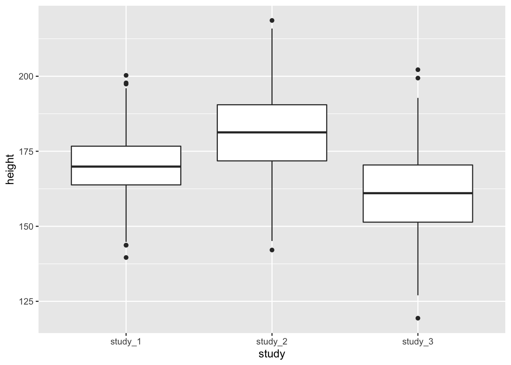
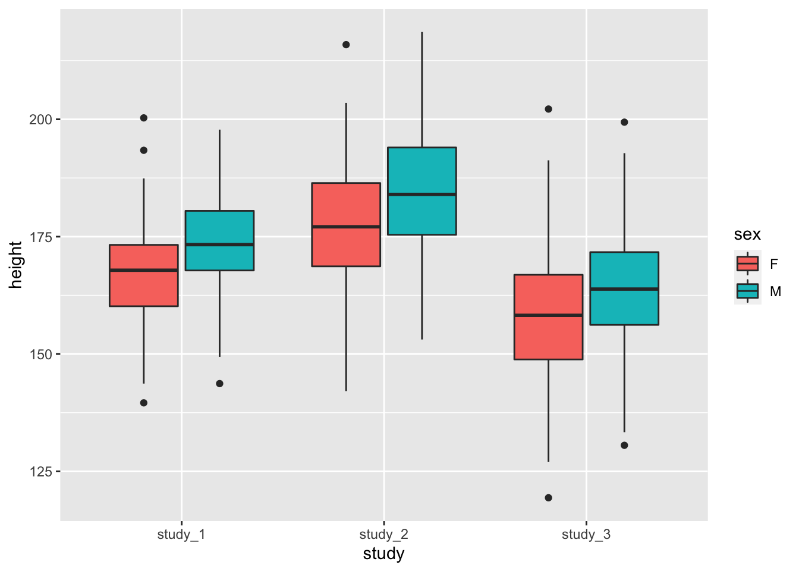
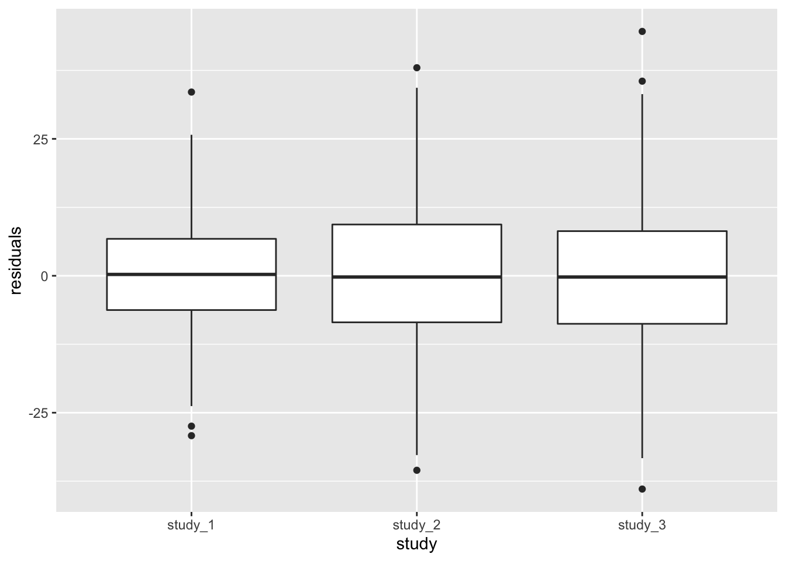

3 Phenotype Harmonization
To increase your sample set, you may need to combine phenotype data from different studies in order to run a cross-study analysis. The studies involved may have collected data in different ways, used different protocols or measurement units, or used different cutpoints to determine case status. The process of manipulating the phenotype data from different studies so that they can be analyzed together is called “phenotype harmonization”.
In this exercise, we assume that you have created a phenotype harmonization plan for height, sent it to members from three studies to perform the harmonization, and received a harmonized phenotype file from each study. We will generate some diagnostic information about the harmonized phenotype.
The exercise uses 1000 Genomes data, with simulated phenotypes for study, age, and height. The example phenotype files shown here are very simplified compared to how actual studies store and organize their their data.
In this exercise, we will be using dplyr for a lot of the data manipulation, so load it now.
3.1 Inspect individual study data in R
The first step is to read the files into R for processing.
repo_path <- "https://github.com/UW-GAC/SISG_2021/raw/master"
if (!dir.exists("data")) dir.create("data")
pheno_files <- c("data/pheno_data_study_1.txt", "data/pheno_data_study_2.txt", "data/pheno_data_study_3.txt")
for (pheno_file in pheno_files) {
if (!file.exists(pheno_file)) download.file(file.path(repo_path, pheno_file), pheno_file)
}Next, read the study phenotype files into R. In this case, each file is tab-delimited.
study_1 <- read.table("data/pheno_data_study_1.txt", header = TRUE, sep = "\t", as.is = TRUE)
head(study_1)## subject_id sex age height
## 1 HG00096 M 47 165.3
## 2 HG00102 F 49 169.1
## 3 HG00112 M 46 167.9
## 4 HG00114 M 49 169.5
## 5 HG00115 M 35 161.1
## 6 HG00116 M 37 182.2study_2 <- read.table("data/pheno_data_study_2.txt", header = TRUE, sep = "\t", as.is = TRUE)
head(study_2)## subject_id Sex Age Height
## 1 HG00099 F 40 185.5
## 2 HG00103 M 50 190.8
## 3 HG00106 F 51 165.5
## 4 HG00107 M 39 195.8
## 5 HG00109 M 48 181.5
## 6 HG00111 F 42 194.9study_3 <- read.table("data/pheno_data_study_3.txt", header = TRUE, sep = "\t", as.is = TRUE)
head(study_3)## subject_id sex age height
## 1 HG00097 F 47 57.0
## 2 HG00100 F 45 59.3
## 3 HG00101 M 40 70.0
## 4 HG00105 M 34 62.4
## 5 HG00108 M 47 66.3
## 6 HG00110 F 44 62.7Look carefully at the output and see if anything looks suspicious.
You may have noticed that one of the studies has given their variables slightly different names than the others. Rename them as appropriate.
## [1] "subject_id" "Sex" "Age" "Height"study_2 <- study_2 %>%
rename(sex = Sex, age = Age, height = Height)
# Check that they are correct.
names(study_2)## [1] "subject_id" "sex" "age" "height"You’ll also want to calculate summaries of the data values to see if anything looks very different than what you expect.
## Min. 1st Qu. Median Mean 3rd Qu. Max.
## 139.6 163.8 169.9 170.2 176.7 200.3## Min. 1st Qu. Median Mean 3rd Qu. Max.
## 142.1 171.8 181.3 180.8 190.5 218.6## Min. 1st Qu. Median Mean 3rd Qu. Max.
## 47.00 59.60 63.40 63.42 67.10 79.60Here, the values that study_3 has given you don’t seem to have the same range as those from study_1 and study_2. In cases like this, you’ll want to follow up with whoever provided the harmonized data to see what’s going on. It could represent an error in calculating the harmonized data values, a true property of the study (e.g., a study containing all children), or something else. In this case, the values were measured in inches instead of centimeters, so they will need to be converted to centimeters to be compatible with the other studies.
Calculate the summary again and compare it to the other studies above.
## Min. 1st Qu. Median Mean 3rd Qu. Max.
## 119.4 151.4 161.0 161.1 170.4 202.2The corrected values look much more similar now.
Note that this sort of error is easy to correct, but it is not uncommon to have more subtle issues that need to be addressed when working with phenotype data. Knowledge of the study design as well as the phenotype area of interest is essential to address them properly. Additionally, different decisions may need to be made for different analyses based on the specific questions they are trying to answer.
3.2 Compare study values
Next we will make some more direct comparisons between the three studies, so we will combine the data into one data frame.
First, add a study identifier to the data frame for organizational purposes.
Combine the three different study data frames into one large data frame for joint analysis. Double check that all column names are the same.
## [1] TRUE## [1] TRUEWe can look at the distribution of phenotype data with text-based reports or with plots.
First, inspect distributions with table for categorical traits and with summary for quantitative traits.
The commads are shown here for study_1, but you should run them for study_2 and study_3 as well to see if you can see any differences.
##
## F M
## 190 185## Min. 1st Qu. Median Mean 3rd Qu. Max.
## 32.00 41.00 45.00 45.17 49.00 62.00## Min. 1st Qu. Median Mean 3rd Qu. Max.
## 139.6 163.8 169.9 170.2 176.7 200.3It is also helpful to use plots to inspect the distributions of phenotype data. Here, we will look at boxplots of height by study.

You may also want to see the difference in height when you include both study and sex:

These diagnostics are helpful to get a feel for the data. They can help you see if one study is vastly different from the others or detect outlier values that you may want to look into further. Some of the differences could also be accounted for by covariates.
3.3 Using regression models to compare studies
The quick diagnostics in the previous section let you see if the data from one study are completely different from the others, but such differences could be due to other factors that could be adjusted for in analysis. To account for these other factors, we need to fit a statistical model to the data. In this case, because the phenotype is quantitative, we will use a linear regression model.
We use the GENESIS R package for fitting the regression model.
It is also the same package that we use for the association analyses, so this exercise provides a brief introduction to the package and some of the associated data structures.
3.3.1 Create an Annotated Data Frame
The first step in fitting the regression model is to create an AnnotatedDataFrame.
This data structure is provided by the Bioconductor Biobase package, and it contains both the data and metadata.
You should include a description of each variable in the metadata.
library(Biobase)
metadata <- data.frame(labelDescription = c(
"subject identifier",
"subject's sex",
"age at measurement of height",
"subject's height in cm",
"study identifier"
))
annot <- AnnotatedDataFrame(phen, metadata)
# Access the data with the pData() function.
head(pData(annot))## subject_id sex age height study
## 1 HG00096 M 47 165.3 study_1
## 2 HG00102 F 49 169.1 study_1
## 3 HG00112 M 46 167.9 study_1
## 4 HG00114 M 49 169.5 study_1
## 5 HG00115 M 35 161.1 study_1
## 6 HG00116 M 37 182.2 study_1## labelDescription
## subject_id subject identifier
## sex subject's sex
## age age at measurement of height
## height subject's height in cm
## study study identifierSave the AnnotatedDataFrame for future use.
The GENESIS code to fit the regression model also requires a sample.id column.
Typically the sample.id column represents a sample identifier, not a subject id.
In this case, we are only working with subject-level data, so we can use the subject identifier as the sample identifier for model-fitting purposes.
3.3.2 Fit a regression model without study
We will first fit a regression model that allows us to see if the mean of the height phenotype is different by study after adjusting for other covariates.
In this case, we will adjust for age and sex, but not for study, because we are interested in seeing differences in mean height by study. We use the fitNullModel function from the GENESIS package – the name “null model” comes from association testing context and will be explained later.
## Warning in .recacheSubclasses(def@className, def, env): undefined subclass
## "numericVector" of class "Mnumeric"; definition not updatedThe output of fitNullModel is a list with a number of named elements
## [1] "model" "varComp" "varCompCov" "fixef" "betaCov"
## [6] "fit" "logLik" "AIC" "model.matrix" "group.idx"
## [11] "cholSigmaInv" "converged" "zeroFLAG" "RSS" "CX"
## [16] "CXCXI" "RSS0"The elements that we will work with in this exercise are:
converged: an indicator of whether the model successfully convergedmodel.matrix: The matrix of subject-covariate values used to fit the modelfixef: The fitted fixed effectsbetaCov: The covariance of the fitted fixed effectsfit: A data frame containing information about the fit, in particular:resid.marginal: The (marginal) residuals from the model, which have been adjusted for the fixed effects but not for the covariance structure
varComp: The fitted variance components
Make sure the model converged.
## [1] TRUENow, add the residuals to the phenotype data frame for plotting.
We need to make sure that we are matching each residual value to the correct subject.
In this case, model.matrix is already in the same order as the input AnnotatedDataFrame, but this may not always be the case (for example, if subjects are excluded due to missing phentoype data).
To match the same subject’s values together, we use the rownames of the fit data frame to match to the subject_id column of the annotated data frame.
We then match the row names (and therefore the residuals) to the sample identifier in the phenotype file using the base R function match.
Next, we want to check if the different studies have the same mean height after adjustment for other covariates (here, age and sex). We will first do this qualitatively by making a boxplot of the residuals by study.

From the boxplot, it is clear that the different studies have different mean heights, even after adjustment for sex and age. At this point, you would need to determine if the differences are acceptable for use in a combined analysis.
3.3.3 Fit a model with study
Next, we can look at a model that adjusts for other covariates as well as study.
This model allows us to run a statistical test on the fitted study means and to qualitatively check if the variances are the same after adjusting for mean effects.
The outcome is the same, but we now add the study as a covariate.
We also allow for group-specific residual variance by study using the group.var argument to fitNullModel.
# include the study in the covariates
covars <- c("age", "sex", "study")
mod_2 <- GENESIS::fitNullModel(annot, outcome = outcome, covars = covars,
group.var = "study")The fixef element now includes effects for study:
## Est SE Stat pval
## (Intercept) 163.67175933 3.18936046 2633.542247 0.000000e+00
## age 0.07519782 0.06921691 1.180283 2.772984e-01
## sexM 6.28764509 0.68812251 83.491932 6.397653e-20
## studystudy_2 10.63152325 0.82176939 167.375182 2.769992e-38
## studystudy_3 -8.96183691 0.84479021 112.537257 2.724959e-26The regression model also shows the differences in mean height by study.
Finally, we want to check if the height distributions from the different studies have the same variance.
Start by looking at the variance components (varComp) element of the model.
## V_study_1 V_study_2 V_study_3
## 98.20191 155.70722 168.82044The variance components (V_study_1, V_study_2, and V_study_3) represent the residual variance in each study.
The fitted values of the variance components are different for the different studies, indicating that the distributions of height in the three studies have different variance even after accounting for the other covariates.
We can also show the same information by plotting the residuals by study. We first have to add the residuals from this model to the AnnotatedDataFrame.
Next make a boxplot of the residuals by study.

Both methods of looking at the variance components indicate that study 1 has a smaller residual variance than the others.
3.4 Final considerations
We have determined that the different studies have both different mean and different variance by study for height. Before performing genotype-phenotype association tests with these data, you would need to think carefully about whether the phenotype is homogeneous enough to be analyzed together. In some cases, there may be a valid reason for different means or variances, for example:
- different heights in different study populations, such as a study composed primarily of Asian participants vs. a study with primarily European participants or a study of all men vs. a study of all women;
- possible secular trends in height, such as comparing the Framingham Original cohort from ~1950 to a cohort from the present day.
In other cases, there may be good reasons to exclude one or more studies, for example:
- a systematic measurement error in one study
- miscalculation or misinterpretation of the harmonization algorithm
- study populations that are too different to be compared, such as trying to include a study composed primarily of children with one composed of adults in a height analysis
It may be necessary to look at other variables that you had not previously considered. Studies may have used different measurement equipment or calibrated their data differently. There might also be other batch effects due to lab procedures or assays that could result in differences in the variance or mean by study. The other variables that you may need to consider are highly dependent both on the phenotype being harmonized and on how a given study has been designed.
Unfortunately there is no single set of guidelines you can use to decide how to proceed with analysis of a phenotype. It is necessary to involve both domain experts and study experts to determine whether the phenotype is homogeneous enough to use in cross-study analysis.